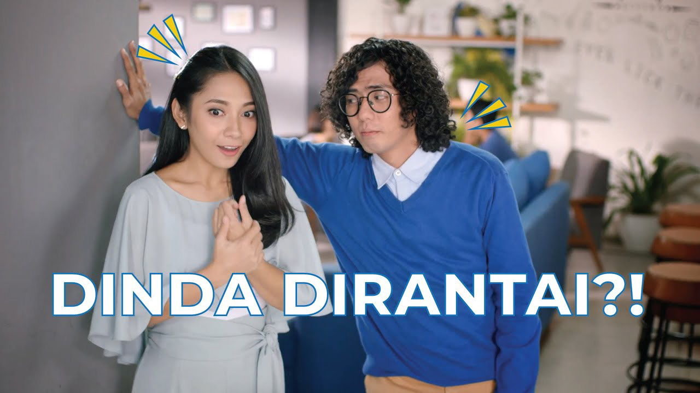

BCA Finhacks 2019
How do you make blockchain less intimidating? Start with a joke.
A comedy-led film that brings an abstract technology topic closer to an everyday audience.

Start with the audience, not the technology
Blockchain was the subject, but a detailed technical explanation was never going to be the most entertaining invitation to BCA Finhacks. The creative challenge was to spark curiosity among people who might hear the word and immediately switch off.
Make the unfamiliar feel familiar
I wrote a comedic storyline around the disconnect between a complicated tech term and an accessible, pop-culture-friendly situation featuring Dinda Kirana. The humour does the first bit of work. Once the audience is paying attention, the subject feels less distant.
Clarity is a creative choice
The script isn't trying to deliver a crash course in distributed ledgers. It opens a door. For an event built around new ideas, the writing needed to make curiosity feel easier than intimidation.
See the work.
Original campaign imagery and films from Dan Pradana's archive, hosted in this repository.
Creative credits.
Team credits preserved from the original portfolio archive.